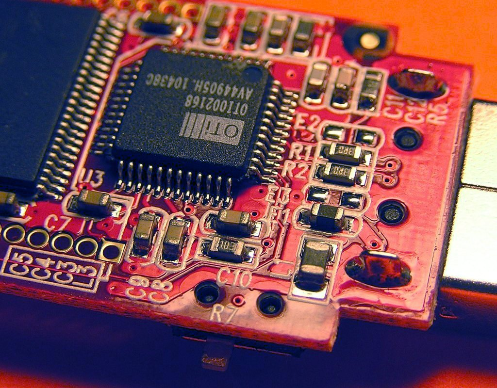

Design a PCB you can probe and repair
A PCB that passes layout checks can still be impossible to assemble or diagnose. Start with a working breadboard and give every important node somewhere a probe can reach.
KiCad, your P02 circuit, a 5 V regulated low-voltage supply, red through-hole LED, 330 Ω resistor, two-pin power connector, and a meter. Designing and checking the board needs no fabrication order.
Put the actual connector and LED next to the schematic
Draw J1 pin 1 → R1 → D1 anode. D1 cathode returns to J1 pin 2. Name the nets 5V_IN, LED_A and GND. Add labelled test pads on all three. With a red LED dropping about 2 V, (5 − 2)/330 ≈ 9 mA. Use the actual LED’s limits and terminal polarity.

Photo by Hotelsierra1, scaled for the course. Original · CC BY-SA 3.0.


Photo by John Fader. Original photo · CC BY-SA 3.0.

For your own board, print at 1:1 without “fit to page”. Put the actual connector, resistor and LED on the print. Check pad spacing and orientation against the datasheets. Use the 3D rendering for a second check.
Make the board from the schematic
- Create a project in KiCad. Draw and annotate the circuit. Run the electrical rules check (ERC). Supply pins on the connector are passive. If the design requires a supply declaration, identify the actual external power path before adding a power flag.
- Assign footprints and update the PCB from the schematic. Put J1 near an edge and the test pads away from tall parts. Give the board a closed outline on Edge.Cuts. Route the supply, LED and return. Mark power polarity and test-pad names in silkscreen.
- Run the design rules check (DRC). Inspect the unrouted-net count, manufacturable clearances and the outline. Open the 3D view to catch collisions, then review the actual Gerbers and drill export in the Gerber viewer. Check your chosen board maker’s fabrication requirements if you intend to build it.

Image by VectorVoyager, scaled for the course. Original · CC BY-SA 4.0.

Watch on YouTube · Find the footprints and their connections in the layout. Make room for your probe points before routing. KiCad 9.0 – Getting Started Part 6- Laying Out Your First PCB | DigiKey · DigiKey.
KiCad’s schematic-to-board tutorial.
Find and prove one deliberately introduced mistake
In a copy, reverse the LED placement or disconnect the link to R1. Open the board view and record whether ERC, DRC or your human checklist catches each fault. ERC and DRC understand declared constraints. They cannot know which connector an assembler will put in or whether the intended footprint matches the actual part.
If you build a board, inspect soldering, compare diode orientation and prove the supply and ground before power. Use a current-limited 5 V bench supply with sufficient but modest headroom for the expected LED current. Measure each test point and infer current from the resistor voltage with the measured resistance.
Keep a release package for a second person
Keep the schematic PDF, PCB revision, BOM with actual part numbers, Gerber and drill files, a tested measurement table and a test-point photo or 1:1 layout print. Write down one design decision made specifically to ease repair.
T26 · PCB construction, solder joints and ESD
T38 · Time series, bus layers and evidence quality
T40 · PCB return paths, decoupling and EMC